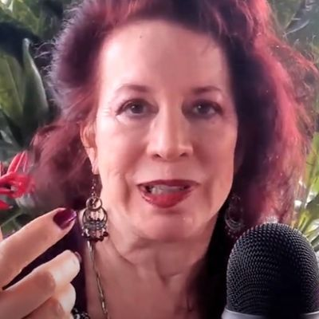
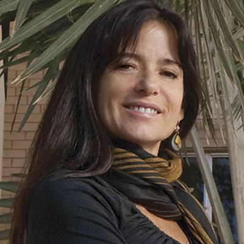
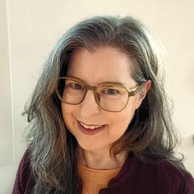
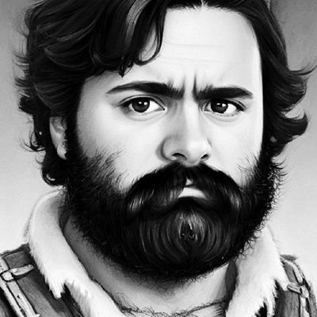
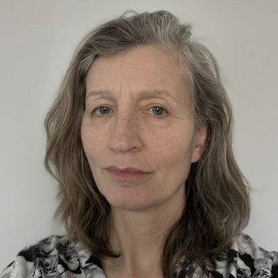
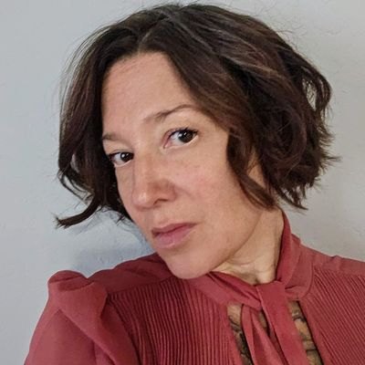
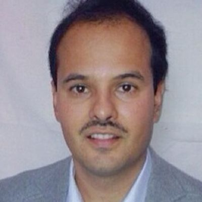

Governance, strategy, and stewardship of the Institute's mission across education, research, and community.
10 Members
Interdisciplinary Researcher
Alexander Sabine is an interdisciplinary researcher with a background in Child Development, Cognitive Science, and English Literature. His doctoral research explores participatory action mapping, the relationship between maps and territories in lived experience. A Fellow of the Higher Education Academy, he has published in Children's Geographies, the International Journal of Early Years Education, and Routledge. He is a trustee for a theatre company and creator of temporalgrammar.ai, a platform of interactive demonstrations exploring the physics of adaptive systems.
temporalgrammar.ai
Scientist & Inventor
Alianna J. Maren is a scientist, inventor, and educator with over three decades of experience in neural networks, statistical mechanics, and predictive intelligence. She holds a Ph.D. in physical chemistry from Arizona State University and four patents spanning knowledge discovery, predictive analytics, and sensor fusion. Her landmark book, the Handbook of Neural Computing Applications (Academic Press, 1990), was the first comprehensive treatment of both neural network methods and their applications. She is Founder and Principal of Themesis Associates and has taught at Georgetown University, George Mason University, and Northwestern University. Her current research applies statistical thermodynamics to energy-based models in machine learning.
aliannajmaren.com · Google Scholar
Professor, Arizona State University
Ana Magdalena Hurtado is a Professor in the School of Human Evolution and Social Change at Arizona State University and a Fellow of the American Academy of Arts and Sciences. She holds a Ph.D. in Human Evolutionary Ecology from Columbia University. Her research spans the evolutionary origins of the sexual division of labour, human life history traits, infectious disease patterns among tribal populations, and the emergence of modern diseases. She is especially known for empirical fieldwork among the Ache and Hiwi hunter-gatherer populations and co-authored Ache Life History: The Ecology and Demography of a Foraging People. Most recently, her work addresses the evolutionary emergence of cooperative public health behaviours as a key human adaptation.
Google Scholar
Plant Biologist & Data Scientist
Ann E. Stapleton is a plant biologist and data scientist who has served as a National Programme Leader at the USDA National Institute of Food and Agriculture, USDA Senior Advisor for Agricultural Systems and Technology, and Programme Director at the U.S. National Science Foundation. Her research focuses on experimental testing of genotype-environment-phenotype models, quantitative genetics, and cyberinfrastructure for biology, with publications spanning biology, computer science, and statistics. She chaired the 2017 Gordon Research Conference on Quantitative Genetics and Genomics and was previously Associate Professor at the University of North Carolina Wilmington.
Google Scholar
Founder, Alignment Lab AI
Austin Cook is Founder and Head of Research at Alignment Lab AI, a Texas-based R&D laboratory focused on AI alignment and open-source solutions. His work centres on democratising artificial intelligence through radical transparency and distributed ownership, developing state-of-the-art AI workstations, open-source development tools, and decentralised computing infrastructure. At the Active Inference Institute, he contributes to the Discovery Engine project, co-authoring the ResNei: Solution Design Document and The Discovery Engine: A Framework for AI-Driven Synthesis and Navigation of Scientific Knowledge Landscapes.
alignmentlab.aiCo-Founder & President
Daniel Friedman is Co-Founder and President of the Active Inference Institute. He holds a Ph.D. in Biology from Stanford University, where he studied collective behaviour and neurophysiology in red harvester ants with Professor Deborah Gordon. He subsequently completed postdoctoral research at the University of California, Davis, on behaviour, distributed physiology, and evolutionary genomics in social insects. His current research spans Active Inference ontology, cognitive security, decentralised science, and the application of complexity frameworks to organisational design. He has co-authored papers with Karl Friston, Maxwell Ramstead, and Chris Fields, and leads the Institute's educational and research programmes.
danielarifriedman.com · Google ScholarConsultant & Grant Strategist
Edward Ober is an independent consultant and business leader with over 25 years of experience in grant writing, programme development, capacity building, organisational development, and marketing across the public, private, and nonprofit sectors. He is Principal at EDO Enterprises and Chief Operating Officer of Grant Management Associates, a California-based consultancy. He has led grant teams that have garnered over $150 million in awards and brings cross-sector strategic expertise to the Institute's governance and development activities.

Artist, Researcher & Data Scientist
Ellynne Dec is an artist, researcher, and data scientist whose work bridges generative systems, material craft, and the foundations of computation. She studied at Stanford (Engineering Economic Systems) and Smith College (Philosophy/Logic), and is a 2025 participant in the Wolfram Summer School. With extensive professional experience in data science, demography, life science, forecasting, and modelling dynamic systems, she has held senior positions at New Classrooms, Precision Medicine Group, Columbia University, and Planned Parenthood Federation of America. Her artistic practice engages with cellular automata, morphogenesis, and symmetry, often implemented through bead weaving, textiles, and sculpture.

Founding Board Member
V. Bleu Knight is a founding Board Member of the Active Inference Institute and a researcher specialising in complex data and biological systems analysis. She holds a Ph.D. from New Mexico State University and has held positions at Tufts University (Allen Discovery Center, working with Michael Levin), the Templeton World Charity Foundation, SavantX, and Kernel. She is a co-author of peer-reviewed work including 'A Variational Synthesis of Evolutionary and Developmental Dynamics' with Karl Friston, and 'The Free Energy Principle & Active Inference: A Systematic Literature Analysis.' Her research spans tissue engineering, neuroscience, bioinformatics, and complexity science.
bleuknight.com · Google Scholar
Distinguished Researcher, Univ. Rovira i Virgili
Vladimir Baulin is a Distinguished Researcher in the Department of Chemical Engineering at Universitat Rovira i Virgili, Tarragona, Spain. He leads the Soft Matter Theory group, focusing on polymer physics, biophysics, and the theoretical design of nanomaterials. His work on the mechanical bactericidal properties of nanostructured surfaces (Nature Communications) and microplastic interactions with lipid membranes (PNAS) has attracted wide attention. He was formerly an ICREA Junior Research Professor and Coordinator of the EU-funded Initial Training Network SNAL. His recent research applies Active Inference and material-based intelligence to the design of autonomous adaptive materials, and he co-founded the spin-off company DeepSea Numerical for marine analytics and AI.
softmat.net · LinkedIn · Google Scholar